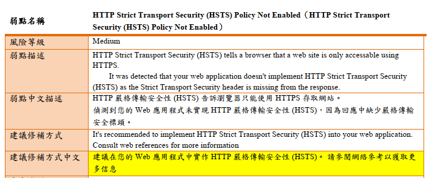
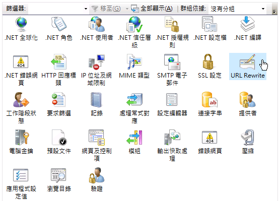
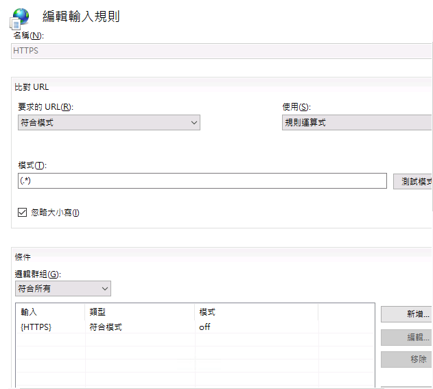
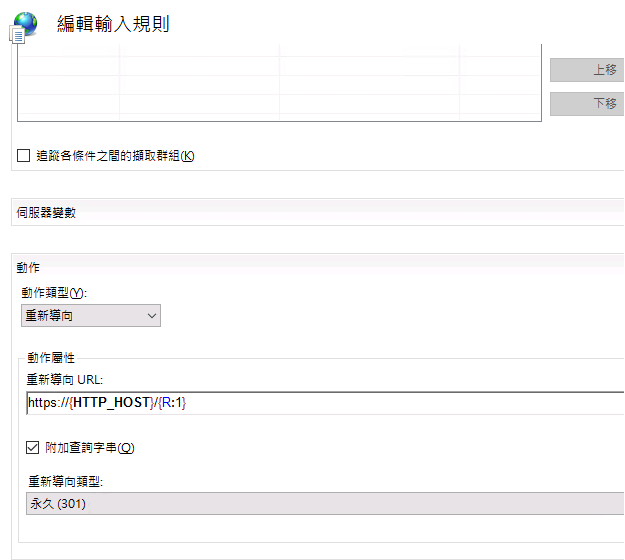
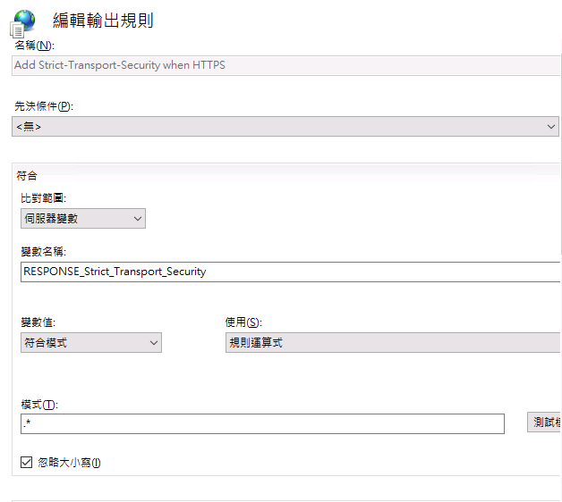
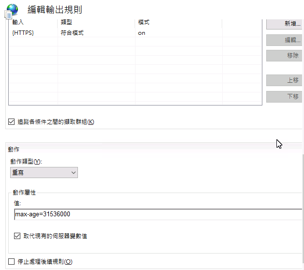

防駭客必學！一次搞懂 IIS HSTS 設定，告別 HTTPS 降級攻擊
你的網站已經設定 HTTPS 了嗎？但是否知道光設定 HTTPS 還不夠安全？今天要和大家分享一個超重要的網站安全防護機制：HTTP Strict Transport Security (HSTS)，讓你的網站安全性更上一層樓！
問題發現：弱點掃描警告
最近在進行專案的弱點掃描時，發現了一個低風險的問題：

弱點說明提到：應用程式未設定 HTTP Strict Transport Security (HSTS) 標頭。這可能讓攻擊者有機會進行 HTTPS 降級攻擊，竊取敏感資訊。
什麼是 HSTS？為什麼這麼重要？
HSTS 全名是 HTTP Strict Transport Security，是一種由網際網路工程任務組（IETF）發布的網路安全政策。它的主要功能是：
- 強制瀏覽器使用 HTTPS 與網站進行通訊
- 有效防禦 SSL 剝離攻擊
- 保護使用者的敏感資訊
- 避免憑證警告被忽略
HSTS 運作原理
讓我們看看 HSTS 是如何運作的：
- 使用者第一次存取網站
- 伺服器在回應中加入 HSTS 標頭
- 瀏覽器記住這個安全設定
- 之後瀏覽器會自動將 HTTP 請求轉為 HTTPS
- 有效防止中間人攻擊
HSTS 的兩種設定方式
在 IIS 中，有兩種方式可以設定 HSTS：
1. 使用 CustomHeaders（簡單但不夠完善）
<system.webServer>
<httpProtocol>
<customHeaders>
<!-- 設定 HSTS 標頭，max-age 單位為秒（此處設定一年） -->
<add name="Strict-Transport-Security" value="max-age=31536000"/>
</customHeaders>
</httpProtocol>
</system.webServer>2. 使用 URL Rewrite（建議使用）
<system.webServer>
<rewrite>
<outboundRules>
<rule name="Add HSTS Header" enabled="true">
<!-- 比對所有回應 -->
<match serverVariable="RESPONSE_Strict_Transport_Security"
pattern=".*" />
<conditions>
<!-- 只在 HTTPS 連線時添加標頭 -->
<add input="{HTTPS}" pattern="on" ignoreCase="true" />
</conditions>
<!-- 設定 HSTS 標頭內容 -->
<action type="Rewrite" value="max-age=31536000" />
</rule>
</outboundRules>
</rewrite>
</system.webServer>實務操作：在 IIS 上設定 HSTS
步驟一：設定 HTTPS 重新導向
開啟 IIS 管理員
選擇你的網站，找到「URL Rewrite」模組
新增輸入規則，設定如下：
- 名稱：HTTP to HTTPS redirect
- 模式：(.*)
- 條件：{HTTPS} 選「符合模式」，填入 ^OFF$
- 動作：選「重新導向」，URL 填 https://{HTTP_HOST}/{R:1}


步驟二：設定 HSTS 輸出規則
- 在「URL Rewrite」模組中新增輸出規則
- 設定內容：
- 名稱：Add Strict-Transport-Security when HTTPS
- 變數名稱：RESPONSE_Strict_Transport_Security
- 模式：.*
- 條件：{HTTPS} 選「符合模式」，填入 ^ON$
- 動作：選「重寫」，值填入 max-age=31536000


記得設定完成後要重新啟動網站！
常見問題 Q&A
Q1: 設定後出現重新導向次數過多怎麼辦？
如果你的 SSL 憑證是在網域防火牆處理，需要修改設定：
<conditions>
<!-- 改用 X-Forwarded-Proto 檢查 -->
<add input="{HTTP_X_FORWARDED_PROTO}" pattern="https" />
</conditions>Q2: 要設定多久的 max-age 比較好？
- 測試環境：建議 300 秒
- 正式環境：一般設定一年（31536000 秒）
Q3: 如何驗證設定是否成功？
- 使用瀏覽器開發者工具檢查回應標頭
- 使用 SSL Labs 測試
- 嘗試用 HTTP 連線，應該會自動轉為 HTTPS
參考資料
結語
網站安全不容忽視！透過正確設定 HSTS，你的網站就能有效防範 HTTPS 降級攻擊。記得要先在測試環境驗證設定，確認一切正常後再部署到正式環境。